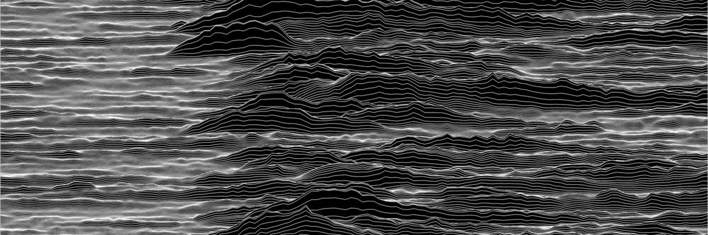

About Me
I am a final year medical student at UCL, and will be starting work as a junior doctor in August 2022. I completed my PhD on the neural basis of working memory and decision making in 2019. I plan to combine my interests in medicine and research with a career in academic psychiatry. I have extensive experience in machine learning analyses with large datasets, and I am open to data science opportunities.
Click here for copy of my CV

Media
Jon Driver Prize acceptance speech, providing a short summary of my PhD work.
Interview with Dr Chris Smith for the Naked Scientists podcast, providing a short summary of our study on the effects of ketamine on decision making, and its relevance for patients with psychosis.
In 2017, I won the Art of Neuroscience competition for my work 'Unknown Variability: Predicting Responses of Single Neurons'. Each line of the image represents an individual neuron within the Prefrontal Cortex. It shows the variability of responses of single neurons to stimuli predicting rewards, whilst animals are making simple decisions.
Publications
Cavanagh, SE ., Hunt, LT., & Kennerley, SW. (2020). A diversity of intrinsic timescales underlie neural computations - Frontiers in Neural Circuits [Link]
Cavanagh, SE., Lam, NH., Murray, JD., Hunt, LT., & Kennerley, SW. (2020). A circuit mechanism for decision-making biases and NMDA receptor hypofunction - eLife [Link] [Code] [Data]
[Naked Scientists Podcast]
Cavanagh, SE., Malalasekera, WMN., Miranda, B., Hunt, LT., & Kennerley, SW. (2019). Visual fixation patterns during economic choice reflect covert valuation processes that emerge with learning - PNAS [Link]
Hannah, R., Cavanagh, SE., Tremblay, S., Simeoni, S., & Rothwell, JC. (2018) - Selective suppression of local interneuron circuits in human motor cortex contributes to movement preparation - Journal of Neuroscience [Link]
Cavanagh, SE., Towers, JP., Wallis, JD., Hunt, LT. & Kennerley, SW. (2018). - Reconciling persistent and dynamic hypotheses of working memory coding in prefrontal cortex - Nature Communications [Link]
Cavanagh, SE., Wallis, JD., Kennerley, SW. & Hunt, LT. (2016) - Autocorrelation structure at rest predicts value correlates of single neurons during reward-guided choice - eLife [Link] [Code and Data]
An up to date list of my publications can be found on my Google Scholar Page
Interests
Outside of work I enjoy running, football, and exploring London.
Contact
[FirstName] [dot] [Surname] [at] [hotmail.co.uk]